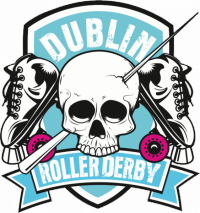

EuroClash Interviews: A Chat with... Dublin Roller Derby
Yesterday, we covered one half of the Irish contingent to Newcastle Roller Girls' EuroClash tournament in March, with the Irish National Team themselves.
Today, we're following up with an audio podcast recorded with Dublin Roller Derby's Snowy. Dublin Roller Derby had a very exciting and packed 2016, with both a US trip (to Beach Brawl, hosted by Gold Coast Derby Grrls in Florida) and plenty of European bouts as well... and their 2017 schedule looks equally busy, with their A team's first bout only a week away on the 11th, over in Toulouse!
Dublin will be competing at EuroClash, and we also expect several of their skaters to be on the Team Ireland roster that competes with Team Scotland there as well.

You can listen to the interview here:
[soundcloud url="https://api.soundcloud.com/tracks/305749218" params="auto_play=false&hide_related=false&show_comments=true&show_user=true&show_reposts=false&visual=true" width="100%" height="450" iframe="true" /]